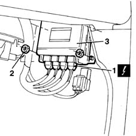

1060G80 ds electric injection control unit - r r
- Path
- Procedures > 10 ENGINE UNIT > 1060 DIESEL FUEL INJECTION > 1060G pressure pump electric control > 1060G80 ds electric injection control unit - r r
- Kind
- repair procedure (removal / refitting; the operation number is the code)
- Applies to
- engines: 1.9 JTD 8V; all production periods
- Interactive page
- https://sloeber94.github.io/elrnDB-fMltpl/en/#/2891420
Applies to: engines: 1.9 JTD 8V; all production periods
 Removing
Removing
 Refitting
RefittingOpen the right side door.
1. Disconnect the electrical connection from the injection electronic control unit.
 | Name | Connector |
|---|---|---|
1 | Engine management ECU |
2. Unscrew the retaining nuts.
3. Remove the control unit.

Applies to: engines: 1.9 JTD 8V; all production periods
Refitting
RemovingFit the control unit in its seat.
Tighten the nuts.
 | Fastening | Component | Ø | Value (daNm) |
|---|---|---|---|---|
- | Nut | DS PRESSURE PUMP INJECTION - ECU | M6 | 0.6 |
Connect the electrical connections.